英语音标 与元音训练
完整课程 · 73 页开场听辨
先完整观看，再说说你听到的发音特点。后面的课程会分别讨论元音、辅音和英美口音。
本课目录
上方可随时切换到完整 DJ 音标表、DJ／KK 对照和听辨练习。
美国人也有口音吗？
美国的地区口音
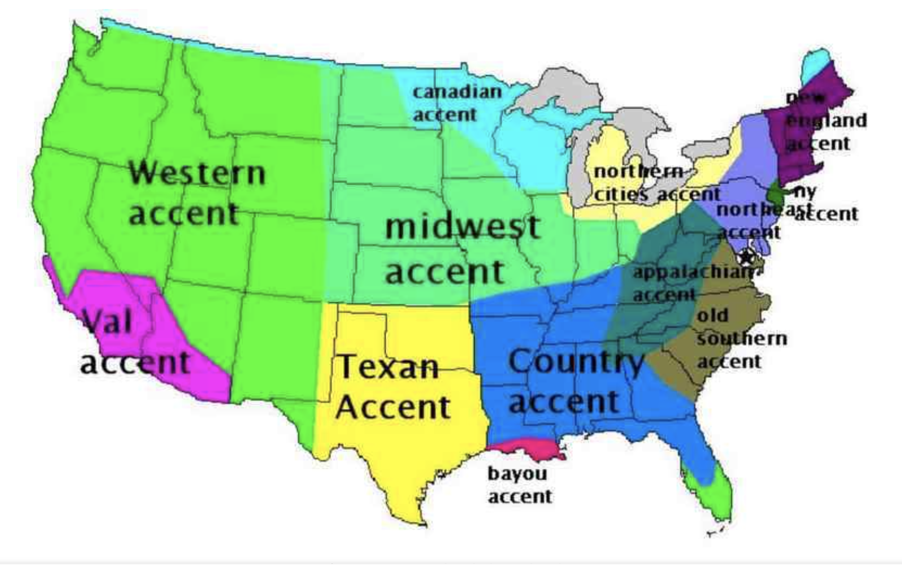
观察图中的 Western、Midwest、Texan、Southern 等标签。它们帮助引出“美国存在多种口音”这一话题。
这是一张简化示意图，实际口音边界并不与州界整齐重合，也不能只凭出生地断定一个人的读音。
General American
Received Pronunciation
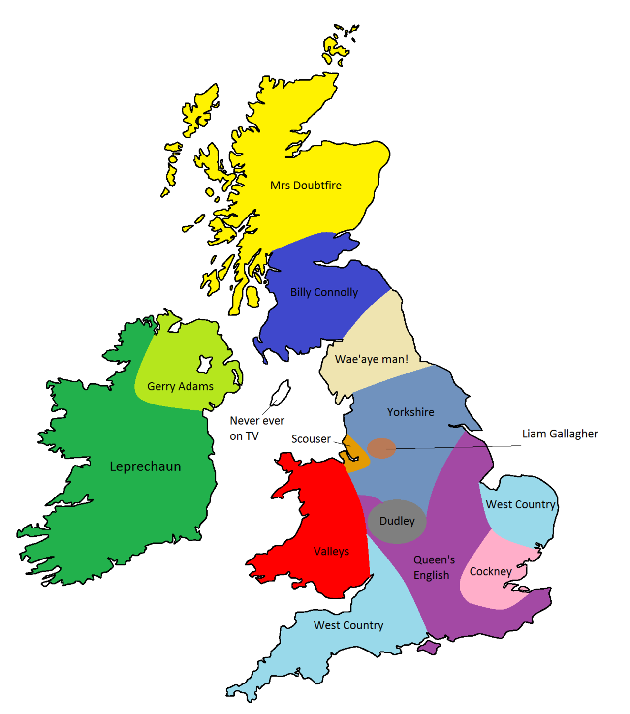
Received Pronunciation（RP） 是传统的英国参考口音，和英国广播、英语教学有历史联系。
校订说明
原页写 RP = BBC English。更准确的说法是：RP 常见于传统广播和教材，今天 BBC 也使用多种地区口音；RP 不能代表全部英国英语。
同一句话，听英美音
The hotter the water, the better it is.
| 听什么 | 例词 | 观察方向 |
|---|---|---|
| 元音 | hotter / water | 比较元音的音色 |
| 辅音 t | hotter / water / better | 注意美式读音中可能出现的闪音 |
| 词尾 r | hotter / water / better | 留意词后接辅音或元音时的差异 |
先听整体节奏，再回到单词。RP 和 GA 在这里是两种参考读法。
逐词看音标
The hotter the water, the better it is.
| 词 | 常见英式单读标音 | 常见美式宽式标音 |
|---|---|---|
| the | /ðə/ | /ðə/ |
| hotter | /ˈhɒtə/ | /ˈhɑːtər/ |
| water | /ˈwɔːtə/ | /ˈwɑːtər/ |
| better | /ˈbetə/ | /ˈbetər/ |
| it | /ɪt/ | /ɪt/ |
| is | /ɪz/ | /ɪz/ |
表格给出词典式音素转写。美式 /t/ 在这些词里可能实现为 [ɾ]；非卷舌型英式的 better it 可以出现连接 r。连续说话时还会有弱读和连接。
校订说明
原页 hotter 的重音未标出，补为 /ˈhɒtə/。句子中补上逗号。两种口音分别列出，避免把一套英式标音同时当作英美两种读音。
Flap / tap T
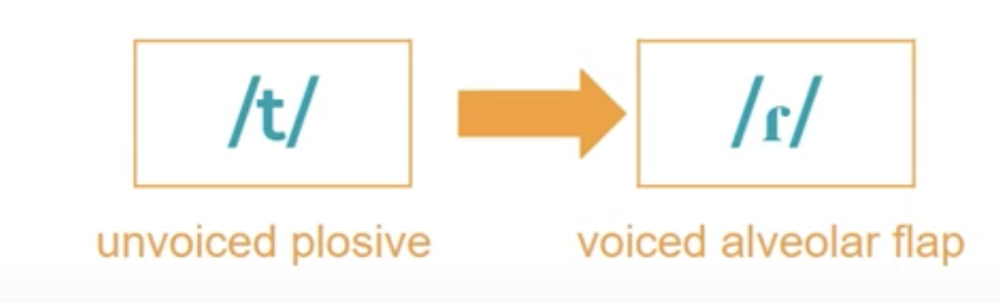
water /ˈwɔːtə/
better /ˈbetə/
hotter /ˈhɒtə/
很多北美口音里，/t/ 和 /d/ 在特定环境中会读成舌尖轻触齿龈的闪音 [ɾ]。词内常见于前面元音重读、后面元音不重读的环境。
校订说明
原页“介于两个元音音素之间”缺少条件，不能推出所有 V–t–V 都变音。原图若把符号写成 /r/，课堂改用语音符号 [ɾ]。
writer 与 rider
writer /ˈraɪtə/
rider /ˈraɪdə/
I was a good writer.
I was a good rider.
在一些北美口音里，中间的 /t/ 和 /d/ 都可以实现为 [ɾ]。部分说话人仍通过前面双元音的音色或时长区分，所以不能一概说两个词完全相同。
hot 与 caught
hot /hɒt/
caught /kɔːt/
spot /spɒt/
probably /ˈprɒbəbli/
thought /θɔːt/
It was hot and getting hotter.
The murderer was never caught.
传统英式 hot／spot 常用 /ɒ/，caught／thought 常用 /ɔː/。常见美式 hot 可以记 /hɑːt/ 或 /hɑt/。先听单词，再比较整句。
校订说明
原页“字母 o”只是切入点，caught、thought 不能都用单个字母 o 的发音规则解释。美式 caught 的读音也有地区差异。
cot–caught merger
cot /kɒt/
caught /kɔːt/
| 口音情况 | cot 与 caught |
|---|---|
| 传统英式参考口音 | 通常区分 /ɒ/ 与 /ɔː/ |
| 一部分北美口音 | 仍区分两个元音 |
| 另一部分北美口音 | 两个元音已合流，两个词可以同音 |
Merger 指原来不同的音在某一口音里合并。判断学习者时先明确参考口音，不把合法的地区读音一律判错。
/ɔː/ 的例词与句子
caught /kɔːt/
saw /sɔː/
call /kɔːl/
The murderer was never caught.
They decided to call the baby Mark.
The workmen sawed and hammered all day.
saw 的过去式 sawed 还要读出词尾 /d/。本页保留完整句子，分别练 caught、call、sawed。美式元音随说话人是否合流而异。
can’t 与 BATH 类词
can't /kɑːnt/
They can't have children.
| 例词 | 传统英格兰南部参考音 | 常见美式参考音 |
|---|---|---|
| class | /klɑːs/ | /klæs/ |
| dance | /dɑːns/ | /dæns/ |
| after | /ˈɑːftə/ | /ˈæftər/ |
| fast | /fɑːst/ | /fæst/ |
| path | /pɑːθ/ | /pæθ/ |
| chance | /tʃɑːns/ | /tʃæns/ |
校订说明
原页截图的“在 /n/、/f/、/s/ 前都要变”过于绝对。这里是特定词汇和口音的对应关系，英格兰北部等口音又有不同。
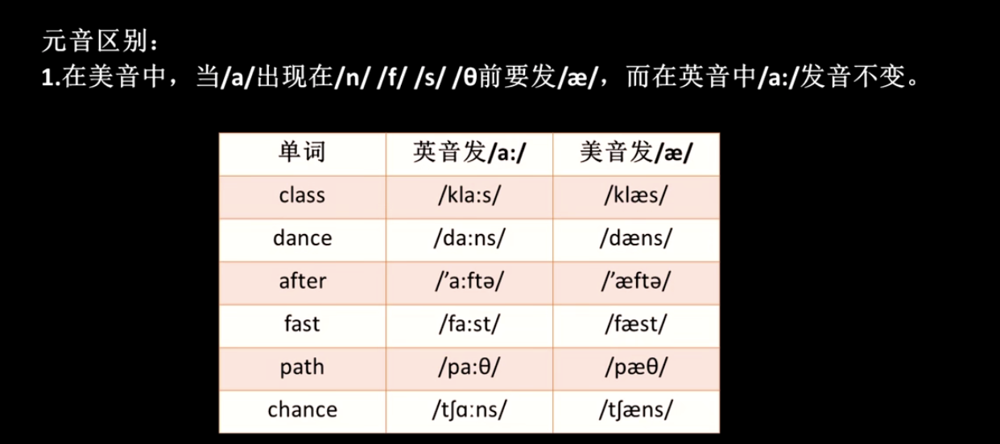
Rhotic 与 non-rhotic
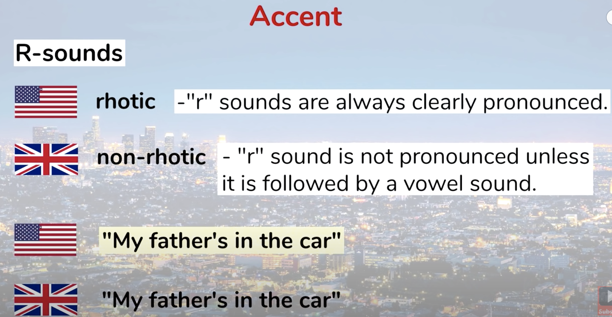
My father's in the car.
car park
car engine
Rhotic：通常保留音节尾的 r 音色。Non-rhotic：通常不在停顿前或辅音前发词尾 r；后接元音时可能出现连接 r。
校订说明
原图“r 总是清楚发出”需要收窄：这里主要比较元音之后、词尾或音节尾的 r。不能把 rhotic 仅等同于字面上的“卷舌”，发 r 的舌形有不同实现。
r 的完整词句练习
partner /ˈpɑːtnə/
her /hɜː/
never /ˈnevə/
murder /ˈmɜːdə/
Come to the New Year disco and bring your partner!
We're going to call her Sophie.
He has never been abroad.
The murdered woman was well known in the area.
校订说明
原页 her /hə(r)/ 是弱式之一；本页单词表列重读英式 /hɜː/，句中可弱读。原句是 murdered，应包含过去式词尾 /d/，不能照 murder 的标音漏读。
/eɪ/ · cake, face, hate
cake /keɪk/
face /feɪs/
hate /heɪt/
A chocolate cake.
I can't see your face.
I hate you, mom!
从一个较开的前元音位置滑向 /ɪ/ 一类的末端。在一个音节里完成，不额外拆成两个音节。
校订说明
原页“eɪ dramatically”没有明确的口音范围或可操作标准。保留 /eɪ/ 和全部词句，用实际音频体会不同说话人的滑动。
/æ/ · sad, flat, man
sad /sæd/
flat /flæt/
man /mæn/
We are very sad to hear that you are leaving.
Exercise is the only way to get a flat stomach after having a baby.
I now pronounce you man and wife.
这是原课件的例句。练习时听 sad、flat、man 的重读元音，/æ/ 常比 /e/ 开口大；实际音色依口音变化。
/aɪ/ · like 与 kite
like /laɪk/
kite /kaɪt/
He's very like her father.
Willy asks if I've ever flown a kite before.
用一个连续的滑动读出 /aɪ/，随后接上词尾 /k/ 或 /t/。
校订说明
原页“aɪ 发音靠后”缺少参照口音，不能作为英美音的一条固定差别。保留原词句，对照具体录音练习。原句里的 he 和 her 可以指不同的人，不必擅自改人称。
/əʊ/ · so 与 old
so /səʊ/
old /əʊld/
What is it that's so important it can't wait five minutes?
In those days most people left school when they were only fifteen years old.
英式参考标音常用 /əʊ/；常见美式标音用 /oʊ/。注意 old 的词尾 /ld/，句子变长也要保留。
校订说明
原页第一个句子末尾的 ?. 改为 ?；两个长句均保留。
发音包含哪些层面？
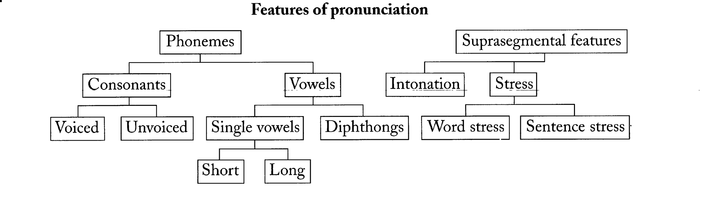
| 音段层面 | 超音段层面 |
|---|---|
| Phonemes：辅音与元音 | Intonation：语调 |
| Consonants：清音／浊音 | Stress：重音 |
| Vowels：单元音／双元音，传统长短分类 | Word stress：词重音；Sentence stress：句重音 |
音标准确是基础，连成句子时还需要重音、节奏和语调。原图的所有分支都保留在这里。
读懂重音和斜线
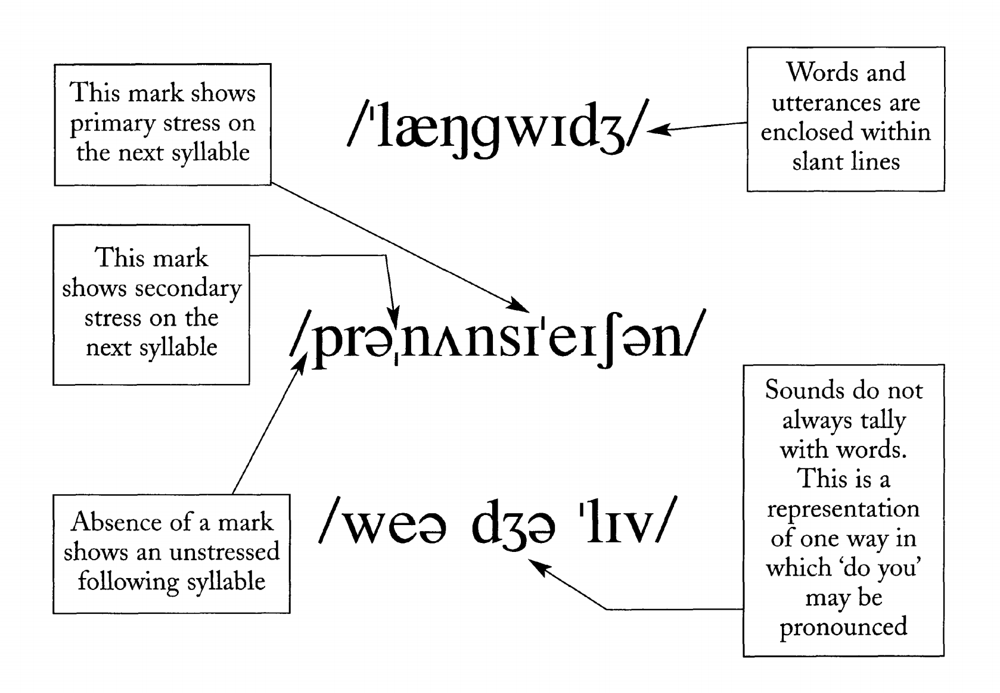
| 记号 | 如何读 | 原图例子 |
|---|---|---|
| ˈ | 标在主重音音节之前 | /ˈlæŋɡwɪdʒ/ |
| ˌ | 标在次重音音节之前 | /prəˌnʌnsiˈeɪʃən/ |
| 无重音号 | 通常表示该音节不重读 | 看同一单词中重音号的位置 |
| / / | 音素转写的边界 | 可以记录一个词，也可以记录话语 |
Where do you live?
原图最后一个例子强调：词与词在真实语流里会连接、弱化。图里的快语写法是示意，具体读音以实际录音为准。
唇形：圆唇、展唇、自然
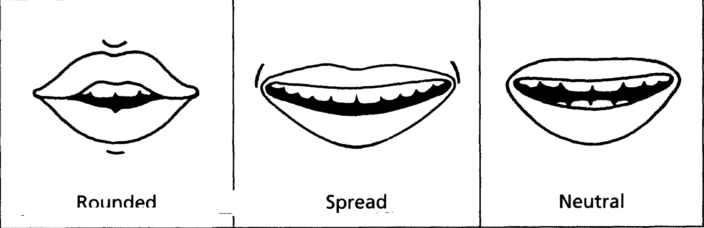
| 唇形 | 含义 | 观察方法 |
|---|---|---|
| Rounded | 圆唇 | 双唇向前或收圆，观察 /ɔː/、/ʊ/ 等 |
| Spread | 展唇 | 双唇向两侧展开，观察 /iː/ 等 |
| Neutral | 自然 | 双唇不刻意圆起或向两侧拉开，观察 /ə/ 等 |
唇形只是一个维度。发音还需要舌位和下巴开合，不能只靠“嘴张成什么样”判断。
IPA、DJ、KK 的关系
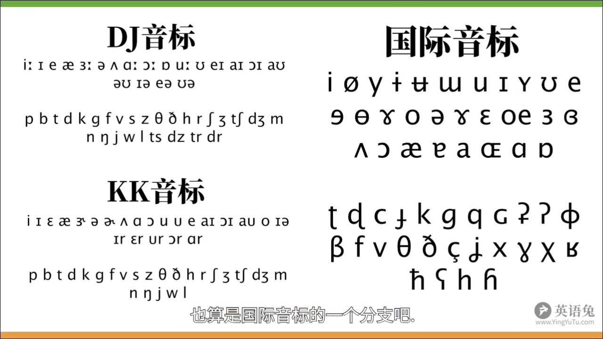
IPA 提供记录多种语言的语音符号。英语词典从中选择所需符号，并约定适合自身读者的标音方式。DJ 与 KK 的名称来自两条英语发音词典传统。
校订说明
原图容易让人把 IPA、DJ、KK 看成完全无关的三套字母。还要注意：原图中的 DJ 表含 /ts dz tr dr/，通常按辅音序列教学；现代常见英语音位表有 24 个辅音。
国际音标，听说过吗？
字母相同，
读音一定相同吗？
读音一定相同吗？
先说出你熟悉的词典音标，再尝试区分“拼写字母”“实际声音”和“记录声音的符号”。
本页保留原课件的课堂提问。可以让学生先举例，再进入下一页的 IPA 定义。
International Phonetic Alphabet
国际音标（IPA），英文全称为 International Phonetic Alphabet。原课件也称它“万国音标”：一套用来标音的符号系统。
它的使用范围跨越多种语言。英语学习词典通常采用较简洁的音素转写，选择足以区分词义的符号。
seat /siːt/
sit /sɪt/
字母 e、a、i 属于拼写；/iː/、/ɪ/ 记录这里的元音差别。
国际音标表的范围
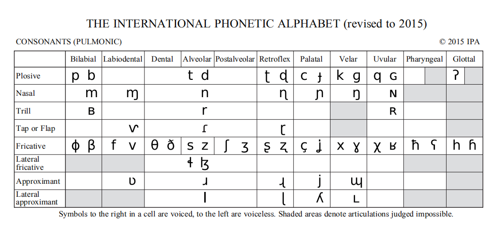
这张图的列按发音部位排列，行按发音方式排列。每个位置可能有清音与浊音。它展示的是国际音标表中的肺部气流辅音部分。
校订说明
这一张图并非完整 IPA 表，完整表还包含元音、其他符号、附加符号和超音段记号。英语初学者可以先学习英语所需的音，不必把整套跨语言符号一次记完。
三种名称，各自指什么？
| 名称 | 全称／人物 | 课堂用途 |
|---|---|---|
| IPA | International Phonetic Alphabet | 跨语言的语音符号体系 |
| DJ | Daniel Jones | 英语发音词典传统，常与英式教学标法联系 |
| KK | John S. Kenyon and Thomas A. Knott | 美国英语发音词典中的标音传统 |
比较时先分清两件事：实际参考口音有没有变，以及同一个音用什么符号记录。
查看 8 组全词 DJ／KK 对照 →DJ · Daniel Jones
KK · Kenyon 与 Knott
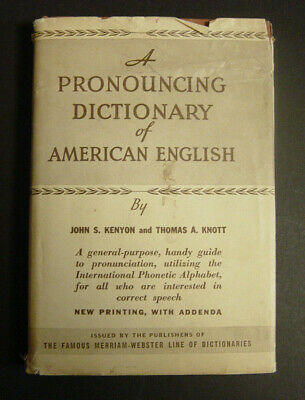
John S. Kenyon 与 Thomas A. Knott 于 1944 年出版 A Pronouncing Dictionary of American English。其中使用的美国英语标音惯例，通常称为 KK 音标。原课件列出的 1953 年属于再版信息。
它选用 IPA 体系中的符号，常见写法包括 /i/、/u/、/ɝ/、/ɚ/。原书也记录地区变体，不能理解为“全美国只有一种读法”。
校订说明
原文的“美音特有的儿音”改为“带 r 音色的元音”。这种语音现象也存在于其他英语口音，并非美国独有。
查词时先看什么？
| 步骤 | 具体做法 |
|---|---|
| 选参考口音 | 看 UK／US 标签，再听该条目的录音 |
| 读词典标音 | 先熟悉常见 IPA 写法、重音号和长音号 |
| 遇到 KK 时 | 辨认 /i/ 对应的 FLEECE 音、/ɛ/ 对应的 DRESS 音等 |
| 遇到不同写法 | 检查词典自己的 pronunciation key，分清写法和声音 |
校订说明
原句“学 DJ 音标即可”改为学习建议：先掌握常见词典 IPA，再学 KK 的主要对应关系。不能说 DJ 仅用于网易有道，也不能把“主流词典使用 IPA”简化成“每本都采用完全相同的 DJ”。
例如 go：有道和剑桥的常见英式标音是 /ɡəʊ/，美式是 /ɡoʊ/。历史 KK 的 /ɡo/ 是另一种记录惯例。
打开 DJ／KK 和现代美式 IPA 对照 →音的分类
| 元音维度 | 分类 |
|---|---|
| 舌位前后 | 前元音、中元音、后元音 |
| 舌位高低 | 高、半高、半低、低；也可用开／闭描述 |
| 传统时长分类 | 长元音、短元音；真实时长也受重音和后续辅音影响 |
| 辅音维度 | 观察 |
|---|---|
| 清／浊 | 在发音时感受声带是否振动 |
| /f/ 与 /v/ | 同样用上齿接近下唇，注意声带差异 |
| /s/ 与 /z/ | 保持相近口腔位置，注意声带差异 |
fine /faɪn/
vine /vaɪn/
sip /sɪp/
zip /zɪp/
原页的 Good pronunciation 引出这一分类。/iː/ 与 /ɪ/ 等既有音色差异，也可能有时长差异，不能只练“拉长／缩短”。
音素、音节、音标
beautiful /ˈbjuːtɪfəl/
| 概念 | 在 beautiful 中怎么理解 |
|---|---|
| 音素 | 音素序列可写为 /b j uː t ɪ f ə l/；不同读法里末尾也可能有音节性 /l/ |
| 音节 | 通常分为 beau · ti · ful，三个音节，第一音节重读 |
| 音标 | 用符号记录这些声音，宽式标音如 /ˈbjuːtɪfəl/ |
校订说明
原图把音节分成两块，且混淆“音素序列”和整词音标。这里按 beautiful 的常见三音节读法展开。
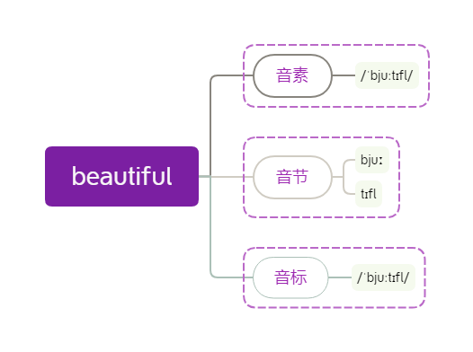
boat／bolt · code／cold
词尾的 dark L
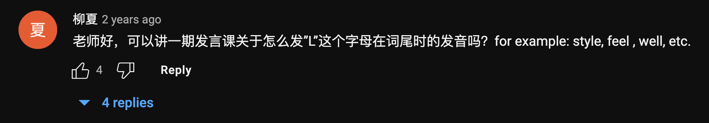
style /staɪl/
feel /fiːl/
well /wel/
girl /ɡɜːl/
在许多口音里，音节末的 /l/ 带有较明显的舌后部抬起，常称为 dark L，语音上可以记作 [ɫ]。词首的 /l/ 往往较清晰。
实际 /l/ 的舌形和“暗”的程度随口音、位置而变化。不要把 dark L 简单等同于 /u/，也不要在 /l/ 后补一个额外元音。
word 与 world
word /wɜːd/
world /wɜːld/
It's not the end of the world.
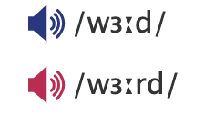
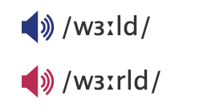
保持 world 里的 /l/。美式参考读法里还要连接 r 音色与 /l/，例如 /wɝːld/；英式参考读法则常为 /wɜːld/。
th 的口型与气流
sin 与 sing
sin /sɪn/
sing /sɪŋ/
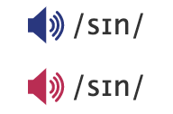
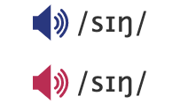
/n/ 的阻碍主要在舌尖与齿龈处，/ŋ/ 则在舌后部与软腭处。两个音都是鼻音。sing 通常以 /ŋ/ 收尾，不额外加 /ɡ/ 或一个元音。
year／ear · woo／ooh
year /jɪə/
ear /ɪə/
woo /wuː/
ooh /uː/
year 比 ear 多开头的 /j/；woo 比 ooh 多开头的 /w/。重点听由辅音进入元音的过渡，不能只看元音部分。
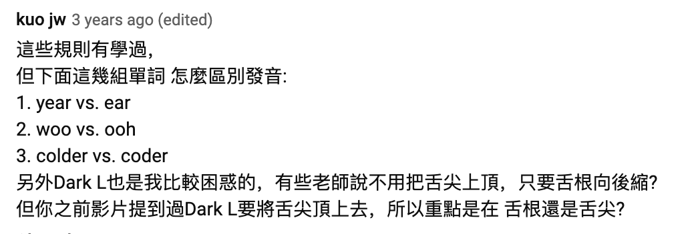
colder /ˈkəʊldə/
coder /ˈkəʊdə/
原评论中的 colder／coder 仍是 /l/ 的有无。关于 dark L，舌尖接触的程度因说话人而异；课堂用完整词对检查可懂度，不强迫所有人采用同一种舌形。
12 个单元音
| 舌位粗分 | 元音 | 原课件例词 | 英式标音 | 发音观察 |
|---|---|---|---|---|
| 前部 | /iː/ | seat | /siːt/ | 舌位前而高，唇形自然展开。 |
| 前部 | /ɪ/ | sit | /sɪt/ | 比 /iː/ 略低、略靠中。 |
| 前部 | /e/ | bed | /bed/ | 舌位偏前，下巴比 /ɪ/ 稍开。 |
| 前部 | /æ/ | bad | /bæd/ | 下巴进一步打开，舌位仍偏前。 |
| 中部 | /ɜː/ | serve | /sɜːv/ | 中部元音，英式单读无词尾 r。 |
| 中部 | /ə/ | teacher | /ˈtiːtʃə/ | 第二音节轻读，口腔放松。 |
| 后部 | /ɑː/ | dark | /dɑːk/ | 舌位低、偏后，不刻意圆唇。 |
| 中部附近 | /ʌ/ | duck / bus | /dʌk / bʌs/ | 听重读元音，实际舌位随口音变化。 |
| 后部 | /ɔː/ | sport | /spɔːt/ | 舌位比 /ɒ/ 高，嘴唇收圆。 |
| 后部 | /ɒ/ | spot | /spɒt/ | 英式参考读法中开口较大、略圆唇。 |
| 后部类别 | /uː/ | food | /fuːd/ | 舌位高，现代口音可有前移。 |
| 后部类别 | /ʊ/ | foot / good | /fʊt / ɡʊd/ | 舌位略低，轻轻圆唇。 |
例词与顺序沿用原表。用声音、舌位和唇形建立对应，再通过词对辨音。
校订说明
原表 serve 的标音多出了末尾音节，改为 /sɜːv/。/ʌ/ 的实际发音常在中部附近，不机械照搬旧表的“后元音”标签。原“中文谐音”栏（衣、一二一、爱、乌、饿）保留在原页对照中，仅供核对，课堂用发音动作说明替代。
单元音拼读
| 舌位粗分 | 元音 | 原课件例词 | 英式标音 | 发音观察 |
|---|---|---|---|---|
| 前部 | /iː/ | seat | /siːt/ | 舌位前而高，唇形自然展开。 |
| 前部 | /ɪ/ | sit | /sɪt/ | 比 /iː/ 略低、略靠中。 |
| 前部 | /e/ | bed | /bed/ | 舌位偏前，下巴比 /ɪ/ 稍开。 |
| 前部 | /æ/ | bad | /bæd/ | 下巴进一步打开，舌位仍偏前。 |
| 中部 | /ɜː/ | serve | /sɜːv/ | 中部元音，英式单读无词尾 r。 |
| 中部 | /ə/ | teacher | /ˈtiːtʃə/ | 第二音节轻读，口腔放松。 |
| 后部 | /ɑː/ | dark | /dɑːk/ | 舌位低、偏后，不刻意圆唇。 |
| 中部附近 | /ʌ/ | duck / bus | /dʌk / bʌs/ | 听重读元音，实际舌位随口音变化。 |
| 后部 | /ɔː/ | sport | /spɔːt/ | 舌位比 /ɒ/ 高，嘴唇收圆。 |
| 后部 | /ɒ/ | spot | /spɒt/ | 英式参考读法中开口较大、略圆唇。 |
| 后部类别 | /uː/ | food | /fuːd/ | 舌位高，现代口音可有前移。 |
| 后部类别 | /ʊ/ | foot / good | /fʊt / ɡʊd/ | 舌位略低，轻轻圆唇。 |
原页拼读提示：b+、f+、d+、l+。固定开头的辅音，替换后面的元音，先慢读，再连起来。
beat /biːt/
bit /bɪt/
bet /bet/
bat /bæt/
feet /fiːt/
fit /fɪt/
deep /diːp/
dip /dɪp/
leave /liːv/
live /lɪv/
本页保留原来重复呈现的完整元音表。下方单词是对 b／f／d／l 拼读提示的补充示范，其中 live 取动词读法 /lɪv/。
校订说明
本页 serve 同样按 /sɜːv/ 校订。重复页保留，便于讲解时返回表格。
8 个双元音
| 分类 | 音标 | 原课件例词 | 传统英式标音 |
|---|---|---|---|
| 合口 | /aɪ/ | eye | /aɪ/ |
| 合口 | /eɪ/ | aim | /eɪm/ |
| 合口 | /aʊ/ | mouse | /maʊs/ |
| 合口 | /əʊ/ | most | /məʊst/ |
| 合口 | /ɔɪ/ | toy | /tɔɪ/ |
| 集中 | /ɪə/ | hear | /hɪə/ |
| 集中 | /eə/ | there | /ðeə/ |
| 集中 | /ʊə/ | sure | /ʃʊə/ |
合口双元音：第二部分写作 /ɪ/ 或 /ʊ/。集中双元音：传统写法中第二部分是 /ə/。两个部分在一个音节里连续完成。
校订说明
本页保留传统的 5＋3 教学框架。现代英国口音中 /ɪə eə ʊə/ 可有单元音化或合流；sure 的传统 /ʃʊə/ 仍需注明版本，剑桥现代英式列 /ʃɔː/，美式列 /ʃʊr/。
eye /aɪ/
aim /eɪm/
mouse /maʊs/
most /məʊst/
toy /tɔɪ/
hear /hɪə/
there /ðeə/
sure /ʃʊə/
易混元音 ① · /iː/ 与 /ɪ/
seat /siːt/
sit /sɪt/
听视频中的元音音色，再对照 seat／sit。两者需要调整舌位，不能只把同一个音拉长或缩短。
/iː/ 的舌位与例词
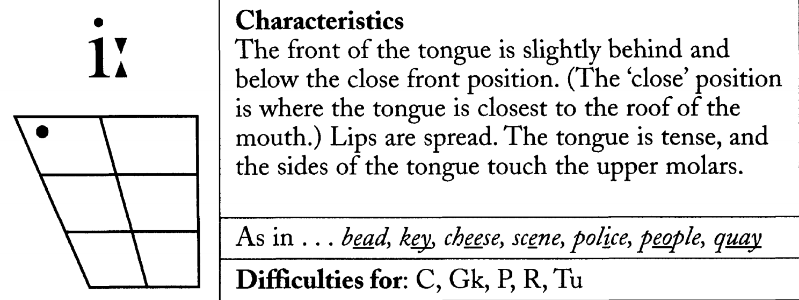
传统描述中，舌前部抬高，接近上腭，双唇自然展开。原图强调舌侧可能接近上臼齿；练习时保持自然，不必用力挤压。
bead /biːd/
key /kiː/
cheese /tʃiːz/
scene /siːn/
police /pəˈliːs/
people /ˈpiːpəl/
quay /kiː/
原图的 Difficulties for 是按学习者语言背景作的提示，字母缩写保留在图中；不能用它来断言某位学生必然有困难。
/ɪ/ 的舌位与例词
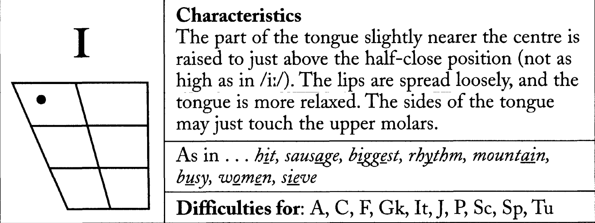
与 /iː/ 相比，舌位通常稍低、稍靠中，嘴唇放松。交替读两种元音，先观察音色，再观察时长。
bit /bɪt/
sausage /ˈsɒsɪdʒ/
biggest /ˈbɪɡɪst/
rhythm /ˈrɪðəm/
mountain /ˈmaʊntɪn/
busy /ˈbɪzi/
women /ˈwɪmɪn/
sieve /sɪv/
这些词来自原图。weak vowels 在不同词典和口音中可能记作 /ɪ/ 或 /ə/，例如 mountain 的后一个元音；课堂先抓重读音节和本次目标音。
/ɪ/ 与 /iː/ 的词对
bitch /bɪtʃ/
beach /biːtʃ/
shit /ʃɪt/
sheet /ʃiːt/
big /bɪɡ/
pig /pɪɡ/
前两组是原课件的元音听辨词对，其中 bitch、shit 是粗俗用语，可用于说明误读可能改变意思。big／pig 则比较开头的 /b/ 与 /p/。
校订说明
原课件的六个词全部保留。big 与 pig 的元音都是 /ɪ/，不能把这一组归为长短元音对照。
可补充的普通词对：seat／sit、sheep／ship。这些是加练，不替换原词。
sheep /ʃiːp/
ship /ʃɪp/
/ɪ/ 放进句子
Business is business.
A pig falls into a big pit!
Does it fit?
| 词 | 音标 |
|---|---|
| business | /ˈbɪznəs/ |
| is | /ɪz/ |
| pig / big / pit / fit | /pɪɡ/ /bɪɡ/ /pɪt/ /fɪt/ |
保持重读词中的 /ɪ/，再连读整句。最后一句可用来检查有没有把 fit 拉成 feet 的元音。
/iː/ 词表
bean /biːn/
pizza /ˈpiːtsə/
clean /kliːn/
read /riːd/
eat /iːt/
校订说明
read /riːd/ 在这里指原形或现在时。过去式和过去分词仍拼 read，但读 /red/。原例词保留，加上词形说明。
/iː/ 放进句子
Please see me in three weeks.
Seeing is believing.
第一句重点听 see、me、three、weeks。第二句里 seeing、believing 的重读音节有 /iː/，词尾 -ing 通常含 /ɪŋ/，可顺带对比两种元音。
易混元音 ② · /ʊ/ 与 /uː/
full /fʊl/
fool /fuːl/
pull /pʊl/
pool /puːl/
先固定开头和结尾辅音，只换元音。/uː/ 的舌位通常更高，/ʊ/ 略低，时长和音色一起听。
原页是第二组元音的章节页。full／fool、pull／pool 是为这一页补充的最小对立示范。
/ʊ/ 的舌位与例词
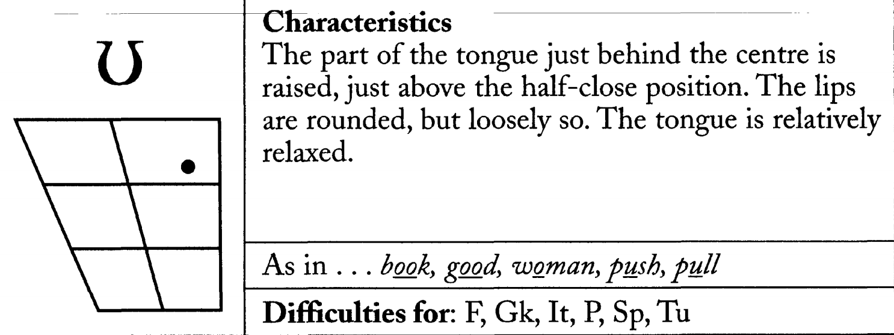
原图描述舌后中部抬起、轻轻圆唇，舌头相对放松。用下面五个原图例词找声音，避免把 /ʊ/ 读成汉语的“乌”或“饿”。
book /bʊk/
good /ɡʊd/
woman /ˈwʊmən/
push /pʊʃ/
pull /pʊl/
good, should, cook, book
The weather is good, so we should cook something from the book.
good /ɡʊd/
should /ʃʊd/
cook /kʊk/
book /bʊk/
校订说明
原句：The weather is good, we should cook something from the book.
在两个独立分句之间补 so，修正逗号拼接；其余词句完整保留。should 在语流里也常弱读 /ʃəd/，不是每次都必须读满 /ʊ/。
在两个独立分句之间补 so，修正逗号拼接；其余词句完整保留。should 在语流里也常弱读 /ʃəd/，不是每次都必须读满 /ʊ/。
Cookies 绕口令
How many cookies could a good cook cook if a good cook could cook cookies?
A good cook could cook as many cookies as a good cook who could cook cookies.
先以慢速读完整的两句话，标出 cookies、could、good、cook。确认每个词清楚后，再逐渐加快。
校订说明
只把原句的 as much cookies as 改为 as many cookies as，因为 cookies 是可数名词复数。原来的完整问句、答句和重复结构都保留。
/ʊ/ 完整词表
book /bʊk/
good /ɡʊd/
hook /hʊk/
cook /kʊk/
should /ʃʊd/
hood /hʊd/
could /kʊd/
sugar /ˈʃʊɡə/
foot /fʊt/
full /fʊl/
bull /bʊl/
pull /pʊl/
原页的 12 个词全部保留。先按行读，再遮住音标随机点词。should／could 在完整句子中可以弱读。
/uː/ 的舌位与例词
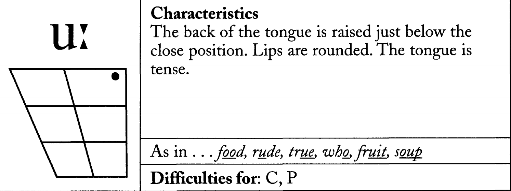
原图描述高舌位、圆唇。现代英语的 /uː/ 在不少口音中会前移，不能把舌头“越往后越好”当作统一目标。
food /fuːd/
rude /ruːd/
true /truː/
who /huː/
fruit /fruːt/
soup /suːp/
/uː/ 完整词表
blue /bluː/
noon /nuːn/
new /njuː/
boot /buːt/
root /ruːt/
cool /kuːl/
food /fuːd/
soup /suːp/
moon /muːn/
flew /fluː/
flu /fluː/
sue /suː/
原页的 12 个词全部保留。new 在常见美式读法中是 /nuː/；root 也有 /rʊt/ 等变体。先按本表参考音练习，再查词典听变体。flew 与 flu 同音。
易混元音 ③ · /e/ 与 /æ/
bed /bed/
bad /bæd/
pen /pen/
pan /pæn/
/æ/ 通常需要比 /e/ 更大的开口。固定 b—d 或 p—n，只改变中间元音。
原页是 /e/ 与 /æ/ 的章节页。这两组词是新增的对照示范，下一页仍保留原来的 axis／access。
axis 与 access
axis /ˈæksɪs/
access /ˈækses/
| 位置 | axis | access |
|---|---|---|
| 第一个元音 | /æ/ | /æ/ |
| 第二音节目标元音 | /ɪ/ | /e/ |
校订说明
两词的首元音都是 /æ/。在原稿这套标法下，它们比较的是第二音节的 /ɪ/ 与 /e/，不能作为 /e/ 与 /æ/ 的最小对立词。词保留，教学用途改正。
/æ/ 词句复习
sad /sæd/
flat /flæt/
man /mæn/
We are very sad to hear that you are leaving.
Exercise is the only way to get a flat stomach after having a baby.
I now pronounce you man and wife.
这是原课件的例句。练习时听 sad、flat、man 的重读元音，/æ/ 常比 /e/ 开口大；实际音色依口音变化。
本页在原 PPT 中再次出现，保留为第二轮练习。可以先独立读，再对照第 19 页的示范回听。
/e/ 的谚语练习
Better late than never.
East or west, home is best.
校订说明
原句 Better later than never 改为常见谚语形式 Better late than never.。
原句East, west, home is the best 调整为惯用版本 East or west, home is best.。这是惯用表达的校订，并非所有类似变体都不合语法。
原句
重点听 better、never、west、best 中的 /e/。late 的元音是 /eɪ/，也可以拿来比较。
/æ/ 的完整句子练习
Pack the baggage in the back of the taxi.
I'll catch you later.
pack /pæk/
baggage /ˈbæɡɪdʒ/
back /bæk/
taxi /ˈtæksi/
catch /kætʃ/
保留原课件的 baggage，不换成 bag。第一句集中练 /æ/，第二句让 catch 进入常见口语表达。
/aʊ/ 的句子练习
He's a night owl.
Let's get out of here now.
There is no doubt about it.
owl /aʊl/
out /aʊt/
now /naʊ/
doubt /daʊt/
about /əˈbaʊt/
先保持起点开口，再滑向较收拢的末端。doubt 中的 b 不发音，about 的第一音节轻读。
/eɪ/ 的句子练习
No pain, no gain.
He often makes faces at the baby.
校订说明
原页 No pains, no gains 统一为更常见的谚语形式 No pain, no gain.，不把复数变体一概判为语法错误。
He often makes a face to the baby 调整为 He often makes faces at the baby.，使用常见搭配 make faces at。
pain /peɪn/
gain /ɡeɪn/
makes /meɪks/
face /feɪs/
baby /ˈbeɪbi/
/ə/ 与 /ʌ/
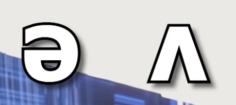
about /əˈbaʊt/
bus /bʌs/
up /ʌp/
原课件用 about 的第一音节说明非重读 /ə/，用 bus、up 说明重读的 /ʌ/。先感受重音位置，再比较元音。
校订说明
“一个非重读，一个重读”适合这几个例词，但不能说所有非重读元音都一定变成 /ə/。原备注“占了 13% 的音”缺少语料来源，只保留在原文对照中，不作为本课结论。
重音位置与元音
bus /bʌs/
about /əˈbaʊt/
under /ˈʌndə/
above /əˈbʌv/
up /ʌp/
above 同时包含 /ə/ 和 /ʌ/：第一音节轻，第二音节重。under 的第一音节重读，英式参考音的末音节含 /ə/。
/ə/ 与 /r/ 的连接
What are you doing?
辅音表与辅音组合
| 发音方式 | 音素 | 原课件例词 |
|---|---|---|
| 爆破音 · 双唇 | /p/ | plate |
| 爆破音 · 双唇 | /b/ | bump |
| 爆破音 · 齿龈 | /t/ | talk |
| 爆破音 · 齿龈 | /d/ | dead |
| 爆破音 · 软腭 | /k/ | kite |
| 爆破音 · 软腭 | /ɡ/ | girl |
| 摩擦音 | /h/ | hat |
| 摩擦音 | /f/ | fame |
| 摩擦音 | /v/ | vapor |
| 摩擦音 | /s/ | six |
| 摩擦音 | /z/ | zip / zero |
| 摩擦音 | /ʃ/ | cash |
| 摩擦音 | /θ/ | three |
| 摩擦音 | /ð/ | smooth / there |
| 摩擦音 | /ʒ/ | usually |
| 塞擦音 | /tʃ/ | which / lunch |
| 塞擦音 | /dʒ/ | job / joke |
| 鼻音 | /m/ | mother |
| 鼻音 | /n/ | name |
| 鼻音 | /ŋ/ | hungry |
| 近音 | /r/ | right / word / world |
| 近音（半元音） | /w/ | what |
| 近音（半元音） | /j/ | young |
| 边音 | /l/ | plan（light L）/ small（dark L） |
| 辅音组合 | 原课件例词 |
|---|---|
| /ts/ | pizza / hats |
| /tr/ | train / trick |
| /dz/ | friends / cards |
| /dr/ | dream / draft |
原表附带的转写：vapor /ˈveɪpə/、job /dʒɒb/、word /wɜːd/、world /wɜːld/。这些是常见英式单读形式，卷舌型美式相应保留 r 音色。
校订说明
把 r 从“摩擦音”移至近音，常见实际发音是 [ɹ]；“擦破音”统一为“塞擦音”。/tʃ dʒ/ 与 /ts dz tr dr/ 分开列，后四项按辅音组合教学。原表所有例词均保留，中文“吃”只留在原页对照，不用作 /tʃ/ 的发音等号。
/ʒ/ · usually 与 decision
usually /ˈjuːʒuəli/
decision /dɪˈsɪʒən/
原课件给 usually 两种写法：/ˈjuːʒuəli/、/ˈjuːʒəli/。语流中可能有音节压缩，先从清楚读法开始，再听自然语速。decision 的词尾也可见音节性 n 的记法 /dɪˈsɪʒn/。
/ʒ/ 有持续摩擦并伴随声带振动。避免在前面加出 /d/，否则会接近 /dʒ/。
/ð/ 与 /θ/
this /ðɪs/
these /ðiːz/
three /θriː/
think /θɪŋk/
other /ˈʌðə/
This is so good.
先保持舌齿位置，比较 /θ/ 与 /ð/ 的声带振动。读 these 时词尾是 /z/，读 think 时中间是 /ŋ/。
原页的 this、these、three、think、other 和完整句子全部保留。
/l/ 复习 · word 与 world
辅音难点回顾
| 目标音 | 原课件回顾词 | 自查动作 |
|---|---|---|
| /l/ | word / world | 有没有保留 world 的 /l/ |
| /ʒ/ | usually / decision | 保持摩擦，不加出 /d/ |
| /ð/ | this / these / other | 舌齿摩擦同时有声带振动 |
| /θ/ | three / think | 保持气流，不直接换成 /s/ 或 /t/ |
| /j/ | year / ear / young | 听开头过渡，year 与 ear 要区分 |
原课件的难点集合是 l · ʒ · ð · θ · j。读完后选一组最需要练的词，录音、回听，再重录。
1 / 73
← → 翻页 · D 红笔 · C 清除批注 · 词句试听：Google Chirp 3 HD · 原视频保留原声。
DJ 音标表
单元音
前部
中部
后部
双元音
向 /ɪ/ 或 /ʊ/ 滑
传统表中向 /ə/ 滑
标音说明 本表采用 Jones–Gimson 英式教学标法。前、中、后是课堂上的舌位粗分。/ɪə/、/eə/、/ʊə/ 保留传统写法，现代口音和词典会有变体。
音标、音素和重音怎么看？
/ / 音素标音用斜线写能区别词义的音。例如 seat /siːt/、sit /sɪt/，两个词各有一个音节，只换了中间的元音。
ˈ 主重音重音号写在重读音节前。about /əˈbaʊt/ 有两个音节，第二音节重读。词典里的小圆点有时用来分音节。
ː 长音符号常见英式标法用它标 /iː/、/uː/ 等。练 seat / sit 时还要听音色和舌位的差异。
辅音表 · 24 个常见音素
爆破音
摩擦音
塞擦音
鼻音
近音与边音
词典通常用 /r/ 标英语 r 音素。常见发音 [ɹ] 属于近音。/tr/、/dr/ 和词尾 /ts/、/dz/ 可按辅音组合学习。
DJ、KK 和词典标音
先认口音，再读符号。用同一个词对照，才能看出是哪一层变了。
IPA
国际音标是一套记录语音的符号。英语词典从里面选取所需符号，也会约定自己的标法。
DJ
Daniel Jones 1917 年出版英语发音词典。后来的 Gimson 版更新了元音标法。早期 Jones 的 kit 写成 /kit/，上面的表用 /kɪt/。
KK
Kenyon 和 Knott 1944 年出版美国英语发音词典。原书中常见 /i/、/u/、/ɝ/、/ɚ/，也收录美国地区变体。
| 单词 | 英式词典惯例 | KK 原书标法 | 现代美式 IPA 示例 | 观察 | 英美试听 |
|---|---|---|---|---|---|
| see | /siː/ | /si/ | /siː/ 或 /si/ | 长音号 | |
| bed | /bed/ | /bɛd/ | /bed/ 或 /bɛd/ | 符号选择 | |
| fool | /fuːl/ | /ful/ | /fuːl/ 或 /ful/ | 长音号 | |
| face | /feɪs/ | /fes/ | /feɪs/ | 滑动写法 | |
| go | /ɡəʊ/ | /ɡo/ | /ɡoʊ/ | 起点与写法 | |
| hot | /hɒt/ | /hɑt/ | /hɑːt/ 或 /hɑt/ | 英美音色 | |
| bird | /bɜːd/ | /bɝd/ | /bɝːd/ 或 /bɝd/ | r 音色 | |
| teacher | /ˈtiːtʃə/ | /ˈtitʃɚ/ | /ˈtiːtʃɚ/ | 词尾 r 音色 |
查词演示go 在网易有道和剑桥都标英 /ɡəʊ/、美 /ɡoʊ/。柯林斯 COBUILD 也明确援引 Jones 词典第 18 版。课堂遇到不同词典，先看 UK 或 US，再听该条目的录音。
四组元音，先听再读
先听两个词。自己交替说两遍，再把元音放进完整句子。
01
/iː/ /ɪ/
舌位前而高 → 略低、略靠中
请先听整词的音色，再交替读 seat / sit。时长也常不同。
再练一组词和两句话
02
/uː/ /ʊ/
舌位较高 → 略低
双唇保持轻松，试着先读 pool / pull。两词只有元音不同。
再练一组词和两句话
03
/e/ /æ/
开口较小 → 下巴再放低
用手感受下巴开合，保持 b 和 d 一致。美语词典也可能把 bed 里的元音记为 /ɛ/。
再练一组词和两句话
04
/ə/ /ʌ/
非重读的轻音节 → 清楚的重读元音
above /əˈbʌv/ 同时有两个音。先拍出第二音节的重音，再把开头带过去。
再练一组词和两句话
加练双元音 · /aʊ/、/eɪ/、/əʊ/
/aʊ/
/eɪ/
/əʊ/
同一句，听英美音
用两种参考读法听元音、t 和 r。英国和美国各有多种地区口音。
The hotter the water,
the better it is.
Google Chirp 3 HD 合成示范
car park 与连接 r
常见非卷舌型英式在 car park 的 r 处不发音，在 car engine 里可以连接下一个元音。常见卷舌型美式保留这两处 r。
water 里的 t
很多北美口音会把这个词的 /t/ 读成舌尖轻点上齿龈的 [ɾ]。writer 与 rider 也可能有闪音，部分说话人通过前面的元音区分。
cot 与 caught
传统英式用 /ɒ/ 和 /ɔː/ 区分。一部分北美说话人也区分，另一部分已经把这对元音读成同一个音。
can’t 的元音
传统英格兰南部读音常用 /ɑː/，常见美式读音用 /æ/。英格兰北部也能听到 /æ/ 一类的读音。
听辨与重录
每题先播放，再选你听到的词。
第 1 题
第 2 题
第 3 题
第 4 题
录两遍，只改一处
先读三句并回听，选一组容易混的元音。对照例词练两遍，然后重录三句。
批改示例 0:04 的 good。先听 pull 的 /ʊ/，再重录第二句。
- Does it fit?
- The food is good.
- Pack the bag in the back of the taxi.